Research Hub/The season on YouTube so far: 106 days/Ligue 1
YouTube Football Tracker · Ligue 1 2026/27
How PSG, the league channel and the other 17 clubs publish, who gets watched and who goes quiet, then the season's biggest videos and what they have in common, read chart by chart.
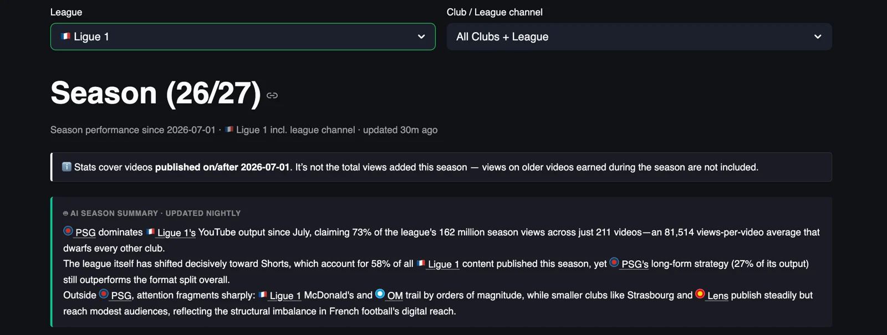
PSG has run away with Ligue 1 on YouTube this season, with 139.0 million views from 280 videos, 70% of the 199.0 million views the 19 channels have collected since 1 July and almost five times the 28.3 million of the official Ligue 1 McDonald's channel in second place. It got there on Shorts, which bring in 118.6 million of those views from 180 uploads, and on one Short above all, an eight-second France vs Morocco clip from 9 July that has 44.1 million views on its own.
The league channel publishes more than anybody, 490 videos in three and a half months, and it is built the other way round from PSG, with 178 long-form videos bringing 17.5 million of its 28.3 million views, and from there the drop is steep, with OM third at 9.5 million, Lyon at 5.7 million, Monaco at 3.7 million and nine of the 18 clubs under one million views for the whole season. Shorts are 57.7% of what Ligue 1 channels publish and 74.7% of what gets watched, so the format has taken the league and PSG has taken the format.
This is the summary the tracker writes for itself every night, with the numbers corrected to the table, and part one of this piece takes the dashboard apart one chart at a time, to show what sits under those sentences, and part two looks at the biggest individual videos of the season.
Scope: videos published on or after 1 July 2026 on the 18 Ligue 1 club channels plus the official league channel, 2,614 videos over 106 days, snapshot of 15 October 2026. Views on older videos earned during the season are not counted.
YouTube Football Tracker
The YouTube Football Tracker follows more than 100 club and league channels across the top five European leagues, plus the road to the World Cup 2026, with daily recaps, season trends and all-time leaderboards, updated every night. If you run YouTube for a club or a league, it is the quickest way to see what your rivals publish, when and in which format, and which of their videos actually travel, so you can learn from them before you plan your own. If you are a sports journalist, it shows you which stories, clubs and formats work on YouTube this week, with the numbers to back the piece. Open the tracker and start with your own league, and if you want a deeper read for your club or your newsroom, message me on LinkedIn.
Explore the YouTube Football TrackerYou can find me on LinkedIn, read my LinkedIn newsletter or find me on Substack.
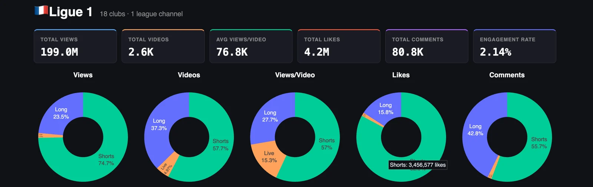
Since 1 July the 19 channels have published about 2,600 videos and collected 199.0 million views, 4.2 million likes and 80.8 thousand comments, which works out at 76.8 thousand views per video and an engagement rate of 2.14%.
The donuts say how far this league has moved to the vertical feed, because Shorts are 57.7% of what the channels publish and they bring in 74.7% of the views and 82.3% of the likes, and long-form, at 37.3% of output, carries 23.5% of the views and 42.8% of the comments. Serie A on the same day has Shorts at 48% of output and 58.6% of views, so Ligue 1 is a Shorts league by a wider margin, and the comments total tells you the cost, 80.8 thousand comments on 199.0 million views against 176.8 thousand on 308.6 million in Italy, which is about 0.4 comments per thousand views here and 0.6 there. Live is around 5% of uploads and under 2% of total views, but it takes 15.3% of the views-per-video donut, so the few streams that do happen pull a crowd.
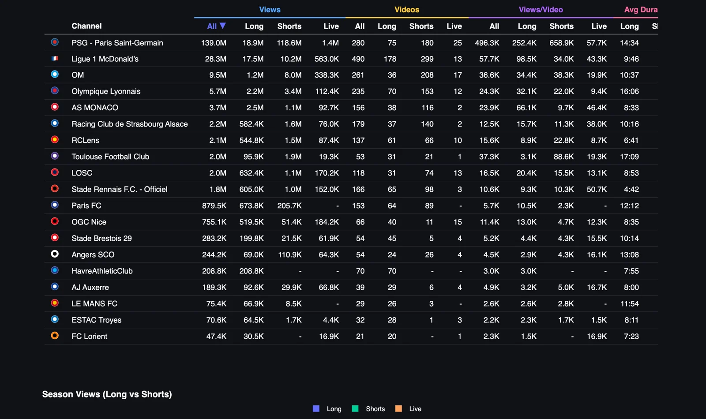
PSG sits on top with 139.0 million views from 280 videos, and 118.6 million of those views come from 180 Shorts, so 85% of the audience runs through the vertical feed on fewer than two thirds of the uploads. The official Ligue 1 channel is second with 28.3 million, built on long-form, with 17.5 million coming from 178 long videos, and OM is third with 9.5 million from 261 videos, 8.0 million of it from Shorts.
After Lyon at 5.7 million the table reaches Monaco in fifth with 3.7 million, and Monaco is the line I would look at twice, because its 38 long-form videos average 66.1 thousand views each, the best long-form average of any club in the table after PSG, from a club I have watched from close over thirty years of time spent in the Principality. At the other end Lorient has 47.4 thousand views from 21 videos, Troyes 70.6 thousand from 32 and Le Mans 75.4 thousand from 29, Le Havre and Lorient have not published a single Short in this window, and Paris FC and Le Mans have not gone live once.
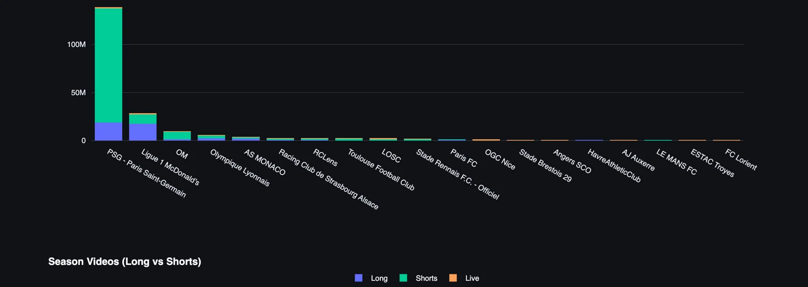
One channel is above 100 million, one is above 20 million and everybody else is below 10 million. PSG and the league channel add up to 167.3 million views, 84% of the 199.0 million total, and with OM and Lyon the top four reach 182.5 million, 92%, so the other 15 clubs share about 16.5 million between them.
PSG takes 118.6 million of its 139.0 million views from Shorts, 85% of the total, and its Shorts win on a per-video basis too, averaging 658.9 thousand views against 252.4 thousand for its long-form, 2.6 times as much. One Short, the France vs Morocco clip at 44.1 million, is almost a third of the club's season on its own, but take it out and PSG still has 94.9 million views, 3.4 times the league channel, and its remaining 179 Shorts still average about 416 thousand, so the lead is a system and the viral clip sits on top of it.
The league channel is the mirror image, with 17.5 million of its 28.3 million views, 62%, from 178 long-form videos that average 98.5 thousand, and its 299 Shorts average 34.0 thousand. It publishes 75% more videos than PSG and gets a fifth of the views, and it runs the same separate lane the Serie A channel runs in Italy, with the league owning match highlights and long-form and the clubs racing each other in the feed.
OM gets 84% of its views from Shorts, with 208 of its 261 videos in that format, and its two formats average almost the same, 34.4 thousand for long-form and 38.3 thousand for Shorts, so OM has a format that works slightly better and makes most of its output in it, which is the right way round. The 36 long-form videos are the small business and the club has decided that on purpose.
Lyon in fourth is built the other way, with 70 long-form videos averaging 32.1 thousand views against 22.0 thousand for its 153 Shorts, and its long-form runs at 16:06 on average, the second-longest in the league, so there is an audience in Lyon that will sit through a quarter of an hour, and the club still puts two thirds of its output into Shorts that earn less per upload.
Monaco, in fifth, takes that to the extreme, with 38 long-form videos averaging 66.1 thousand views and 116 Shorts averaging 9.7 thousand, so the long-form earns almost seven times as much per video and gets a quarter of the uploads. Toulouse in eighth is the reverse case, with 1.9 million of its 2.0 million views from 21 Shorts that average 88.6 thousand, the best Shorts average of any club after PSG, next to 31 long-form videos that average 3.1 thousand views and run 17:09 each, the longest in the league, so the club that has found a Shorts audience spends most of its effort on seventeen-minute videos three thousand people watch.
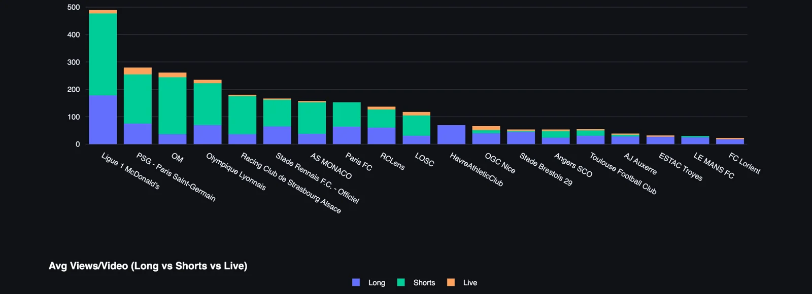
The league channel leads on volume with 490 videos, 299 of them Shorts, ahead of PSG at 280, OM at 261 and Lyon at 235, and below that the link between how much a club publishes and how much it gets watched comes apart. Strasbourg has published 179 videos for 2.2 million views and Toulouse 53 videos for 2.0 million, so Toulouse gets three times as much from each upload, 37.3 thousand against 12.5 thousand, and Rennes has published 166 videos for 1.8 million, which is 10.6 thousand a video. Nice has run 15 live streams, more than any club except PSG and OM, for an average of 12.3 thousand views, and Rennes has run three for an average of 50.7 thousand.
Lorient, at 21 videos, Le Mans, at 29, and Troyes, at 32, are the least active channels, which is one video every three to five days across the season so far, and Le Havre has put out 70 videos without a single Short among them. Serie A's quietest club has published 35 videos in the same window, and Ligue 1 has three clubs below that line.
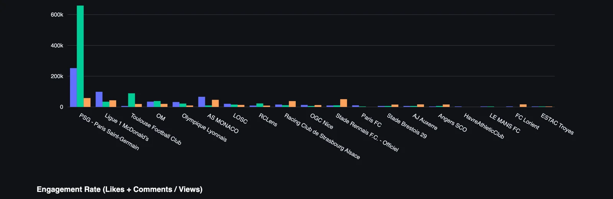
Views per video puts the volume race in context. PSG averages 496.3 thousand views per video and the league channel 57.7 thousand, so the league publishes 75% more and gets about an eighth of the views per upload, and Toulouse is third on this chart at 37.3 thousand from 53 videos, just ahead of OM at 36.6 thousand from 261.
The split by format tells each club where its audience is. Monaco's long-form averages 66.1 thousand views, almost seven times its Shorts at 9.7 thousand, and 116 of its 156 uploads are Shorts. Rennes has the same story with live, three streams averaging 50.7 thousand against 9.3 thousand for a Rennes long-form video, and Paris FC's long-form averages 10.5 thousand against 2.3 thousand for its Shorts, while 89 of its 153 videos are Shorts. Toulouse runs it the other way, with Shorts at 88.6 thousand and long-form at 3.1 thousand, 28 times less, and 31 of its 53 videos in long-form. In each case the club has found the format that works and makes little of it, which is the cheapest growth available anywhere on this page.
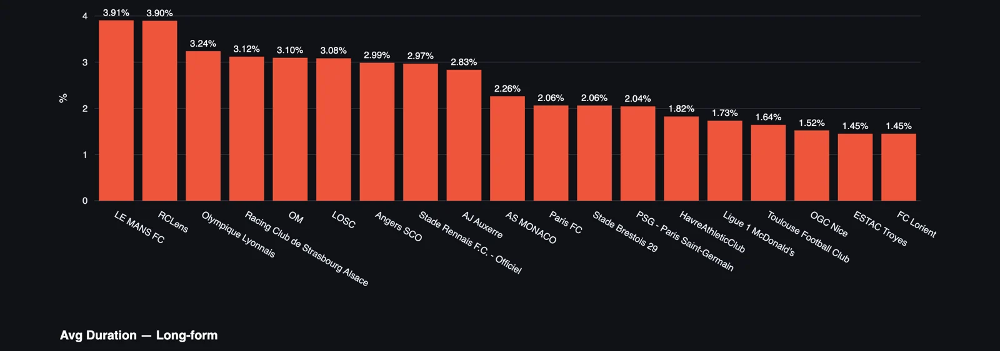
The ranking turns over. Le Mans leads at 3.91%, then Lens at 3.90%, Lyon at 3.24%, Strasbourg at 3.12%, OM at 3.10% and LOSC at 3.08%, and PSG, the views leader, is at 2.04%, thirteenth of the 19 channels. My reading is that PSG's audience is global and watches as neutrals, and the France vs Morocco Short is the extreme case, with 227.8 thousand likes on 44.1 million views, a like rate of 0.5%, which drags the club's season rate down on its own. The league channel at 1.73% is what I would expect from a channel nobody supports, and the bottom is Toulouse at 1.64%, Nice at 1.52% and Troyes and Lorient at 1.45%.
Reach and engagement point in different directions in Ligue 1 as they do in Italy, and the one I would pick out is Lens, seventh on views with 2.1 million and second on engagement at 3.90%, with 61 long-form videos that average 6:41. Le Mans at 3.91% from 75.4 thousand views says the fans who do turn up react, and the problem in the last chapter is that the club gives them very little to turn up for.
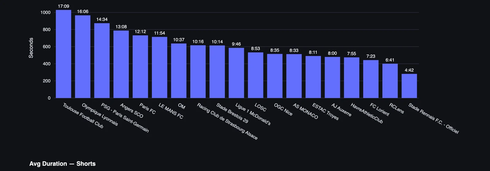
Toulouse makes the longest long-form videos in the league, at 17:09 on average, followed by Lyon at 16:06, PSG at 14:34, Angers at 13:08, Paris FC at 12:12 and Le Mans at 11:54. At the bottom Rennes averages 4:42 and Lens 6:41, which is clip and press-conference length published in the long-form slot.
Read this next to the views-per-video chart and the two ends of it tell different stories, because PSG's fourteen-minute videos average 252.4 thousand views and Toulouse's seventeen-minute videos average 3.1 thousand. Length is fine when people want to spend a quarter of an hour with the club, and Toulouse's audience has already said where it wants to spend its time, in the 21 Shorts.
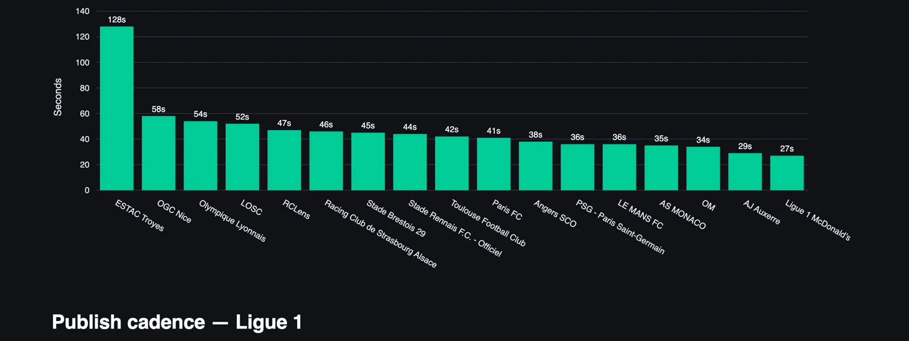
Troyes sits at 128 seconds, which is the length of the one Short it has published, then Nice averages 58 seconds, Lyon 54 and LOSC 52, and a block of six clubs runs from Lens at 47 seconds down to Paris FC at 41. The bigger channels sit below that, with PSG at 36 seconds, OM at 34, Auxerre at 29 and the league channel at 27.
Ligue 1 Shorts run longer than Serie A's, where Juventus averages 18 seconds, and PSG's pairing of 14:34 long-form with 36-second Shorts is a softer version of the Juventus barbell. The league channel makes the shortest Shorts in the league and gets the lowest Shorts average of the top five, 34.0 thousand, so cutting them down has not bought it reach, and the nine Shorts in PSG's top eleven, which run from six to forty seconds, say the subject of the clip is what carries it, at any length.
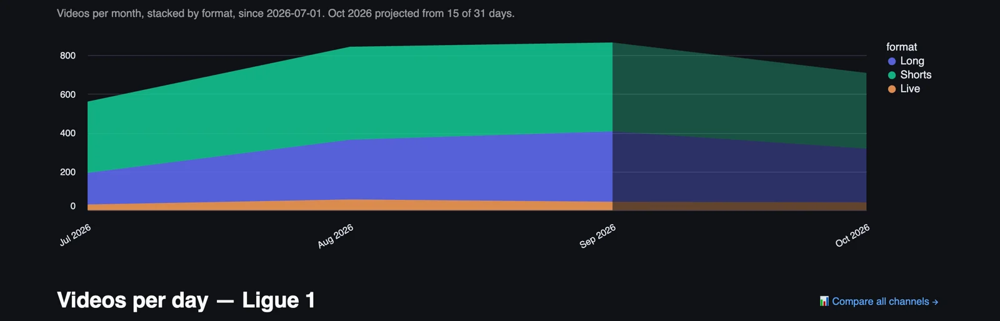
Output grew from roughly 570 videos in July to about 840 in August and 870 in September, and long-form grew faster than Shorts, from around 200 a month to around 410, so the extra volume once the season started came from match highlights, press conferences and full-length pieces as much as from the feed. October is projected at about 710, lower than September, with an international break in the first 15 days and the projection built on half a month, so treat it as an early read.
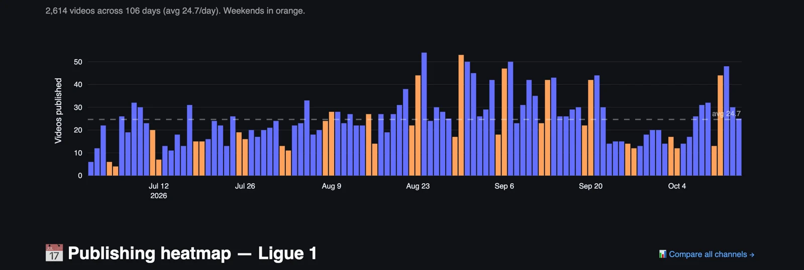
Early July runs at 5 to 20 videos a day, which is pre-season, and the daily count climbs through August to the busiest stretch from the last week of August to the first week of September, with several days at 50 and above, and the weekends in that stretch are among the biggest days of the season, which is match content landing on the day it happens. From late September into early October the count drops to 12 to 20 a day, the international break, and it comes back to the mid-40s on the weekend of 10 and 11 October.
For a club the useful number is the average, 24.7 Ligue 1 videos a day, against 40.9 a day in Serie A, so a Ligue 1 upload competes with a lot less from its own league for the attention of the same fans, and the quiet weeks of a break are the best time on the chart to be the one club still posting.
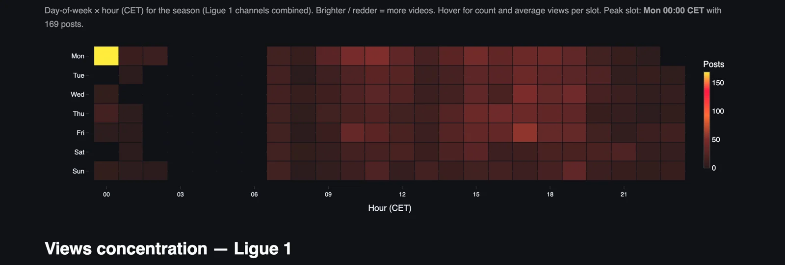
The peak slot is Monday at 00:00 CET, with 169 posts, the hours after the Sunday evening kick-off, so the busiest hour of the Ligue 1 week on YouTube is the post-match window of the last game of the round. After that the working day from 07:00 to 23:00 is where almost everything happens, with Monday late morning and Friday late afternoon the next busiest cells, and the hours from 03:00 to 06:00 are empty on every day of the week.
Friday afternoon as a busy slot fits a league that plays on Friday night, with squad lists, press conferences and pre-match content going out before the game, and a club with a smaller audience could test the hours around it and stay out of the Monday midnight rush, where the biggest post-match content of the week is competing for the same feed.
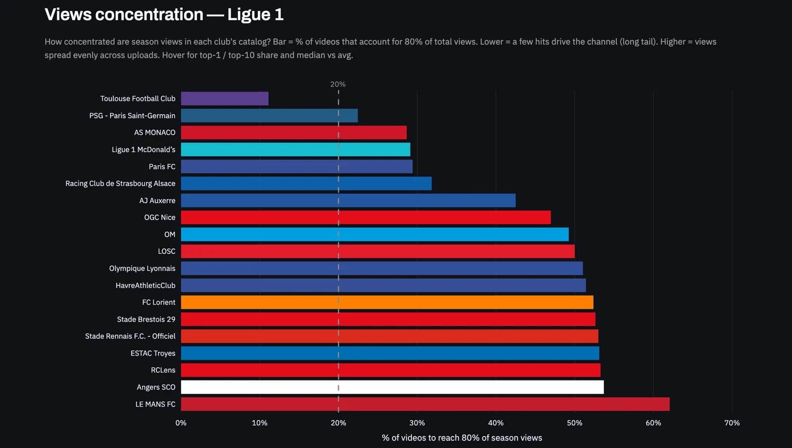
About 29% of the videos produce 80% of the views across Ligue 1 this season, a wider spread than the 20% Pareto line on the chart, which reads oddly for a league where one club holds 70% of the views until you remember that PSG's 280 videos are themselves spread across a big audience. A minority of hits still carries the league, and the rest of the catalogue keeps the channels alive and the algorithm fed.
In the tracker the same chart works per club, and for PSG it would look very different, because one video holds almost a third of the club's season, so a club can see whether it lives on a handful of viral videos or spreads its views evenly, and those are two different editorial problems.
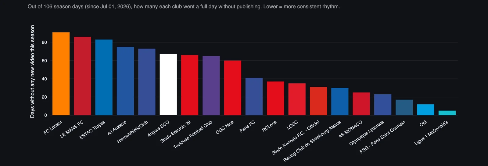
Only about five of the 106 days went by without a league channel video, and OM has missed about 12, PSG about 17, Lyon about 23 and Monaco about 25. At the other end Lorient went about 91 days of the 106 without publishing, Le Mans about 86, Troyes about 83, Auxerre about 75 and Le Havre about 73, and with Angers, Brest, Toulouse and Nice all between 60 and 67, nine of the 18 clubs are silent on more than half the days of the season.
Toulouse in that group is the surprise of the dashboard, a club with the best Shorts average of any club after PSG and 2.0 million views, sitting next to Lorient and Le Mans for consistency with about 65 days missed. Consistency is the cheapest thing on this page to fix, and the five channels with the fewest missed days are the five at the top of the views chart.
Part two
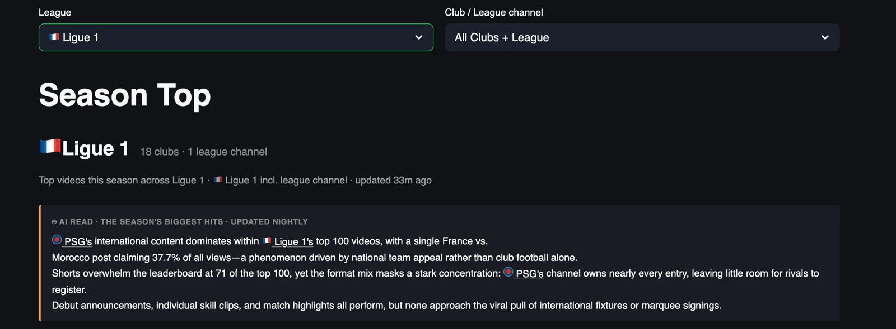
Part one looked at channels, and part two looks at videos, the 100 most-watched Ligue 1 uploads since 1 July, which add up to 130.7 million views, 1.3 million per video on average, at an average age of 48 days, and that is 66% of everything the league's 19 channels have collected this season. One video sits over the whole list, the eight-second France vs Morocco matchday Short PSG published on 9 July, with 44.1 million views, 33.7% of the top 100 on its own and ten times the second-placed video, and PSG places 73 of the 100 videos and takes 88.2% of the views.
Twenty-one of the videos belong to the league channel, which takes around a tenth of the views, and Toulouse, Strasbourg, Monaco and OM share the last five slots. Shorts are 66 of the top 100 and long-form 34, and the long-form entries at the top of the list are match highlights and the Shorts are players, a goalkeeper save, a skill, a debut, a new signing in training, so the two formats are doing the same two jobs they did in part one, and the second half of the list is where the other 18 channels have to look for their lessons, because the first half belongs to one club.
For a club social team this is the list to learn from, and for a journalist it is the closest thing to a record of what Ligue 1 fans chose to watch, like and argue about this autumn.
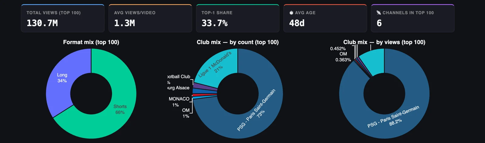
Only six channels place a video in the top 100, and one of them takes almost all of it. PSG has 73% of the videos and 88.2% of the views, the league channel has 21% of the videos and around a tenth of the views, and Toulouse, Strasbourg, Monaco and OM share the remaining five entries with under half a percent of the views each.
Fourteen clubs have no video in the top 100, and Lyon, with 235 videos and 5.7 million views, is one of them, along with Lens, LOSC and Rennes, who each have about two million season views spread across their catalogues without a single breakout. In Serie A four clubs and the league competed for the top 100, and in Ligue 1 the list is one club, one league channel and a few guests.
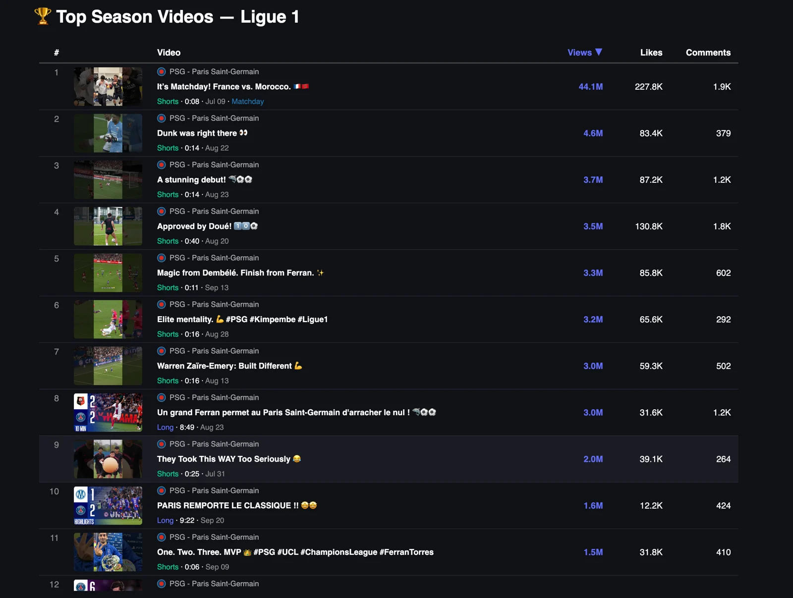
The top eleven are all PSG, and nine of them are Shorts between six and forty seconds long. The France vs Morocco matchday Short, 44.1 million views, is a clip of the club's own players around a France national team game, published on 9 July, and it says more about who follows PSG than any other number on this page, because the audience for a France international is a world audience and the club has learned to borrow it.
The rest of the Shorts are faces and moments, a goalkeeper save with the title Dunk was right there at 4.6 million, a debut clip at 3.7 million published the same day as the Rennes highlights, Doué in training at 3.5 million, a Dembélé assist for Ferran at 3.3 million, Kimpembe at 3.2 million, Zaïre-Emery at 3.0 million, a training-ground joke at 2.0 million and a six-second Ferran Torres Champions League clip at 1.5 million. Most of those need no match footage and can go out the same day they are shot.
The two long-form entries are match highlights, the 2-2 draw at Rennes on 23 August at 3.0 million, 8:49 long, and the 2-1 win at OM on 20 September at 1.6 million, 9:22 long, so a nine-minute highlight package of a big match earns about what a fourteen-second player clip earns, and the player clip costs a fraction to make.
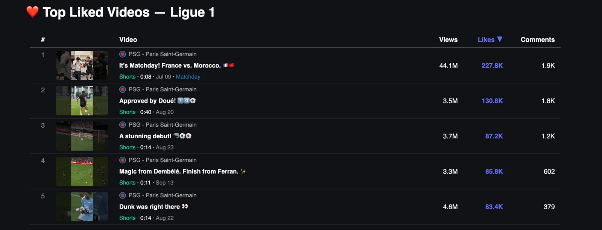
The France vs Morocco Short is first on likes as well, with 227.8 thousand, but on a like rate of 0.5%, and the Doué training clip in second place has 130.8 thousand likes from 3.5 million views, a rate of 3.7%, more than seven times higher. The debut clip sits at 2.4%, the Dembélé assist at 2.6% and the goalkeeper save at 1.8%.
Likes go to the club's own players doing something, a skill in training, a first goal, an assist, and the viral clip of the national team brings viewers who watch and move on. For a club the Doué clip is the model, forty seconds, no match footage, and more reaction per view than anything else on the list.
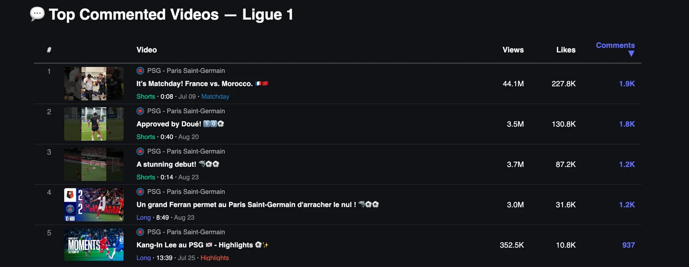
The France vs Morocco Short leads with 1.9 thousand comments, one for every 23 thousand views, and the Doué clip is second with 1.8 thousand, one for every 1.9 thousand views. The debut clip and the Rennes highlights have 1.2 thousand each, and the entry that tells you most is the last one, a 13:39 long-form video of Kang-In Lee's best moments at PSG, published on 25 July, which drew 937 comments from 352.5 thousand views, one for every 376 views, about 60 times the rate of the France vs Morocco Short.
A player's highlights reel at the moment he leaves produces more conversation per view than any match on this list, and for a journalist this is the most useful list in the tracker, because it points straight at the stories fans want to talk about.
Ligue 1 on YouTube is one channel and eighteen others, and the thing under all of it is that PSG's audience is a global one and the club makes content for it, in eight-second clips of players the world already follows, so one Short of its players before a France game has more views than the 17 other clubs have collected together since July. The rest of the league is competing for a French audience with a French rhythm, and nine of those clubs are silent on more than half the days of the season.
Engagement is where the smaller clubs win here as in Italy, and that is the asset I would build on if I ran one of them, with a daily rhythm first, the format the audience has already chosen second, long-form at Monaco and Lyon and Shorts at Toulouse, and the Monday midnight rush left to PSG and the league. Nobody at the bottom of the zero-days chart needs a bigger budget to fix the first of those.
The hit list in part two says what that daily rhythm should carry, because PSG wins with faces, a debut, a save, a training-ground skill, a player leaving, and the league owns the match highlights, and much of what the club wins with needs no match footage, so a club with a tenth of the audience can make the same shape of video tomorrow morning.
YouTube Football Tracker
Clubs and leagues can use it to benchmark their channel against every rival and borrow what is working elsewhere, across all five big leagues. Journalists can use it to find what is breaking out on football YouTube, which club is suddenly growing and which format is taking over, with the numbers to back the story. Everything in this piece is live at ytft.aguywithascarf.com, and if you want a custom view for the clubs or leagues you follow, message me on LinkedIn.
Explore the YouTube Football TrackerYou can find me on LinkedIn, read my LinkedIn newsletter or find me on Substack.